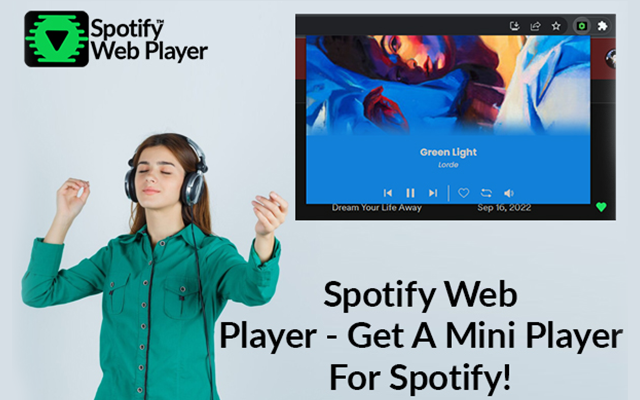

Are you still juggling multiple tabs to control your Spotify music? It's time to transform your listening experience with the revolutionary Spotify Web Player extension. Moreover, this powerful tool lets you effortlessly manage playback directly from your browser, with controls for playing, pausing, repeating, liking, and skipping tracks. Say goodbye to navigating to the Spotify or Web Player websites; this extension brings everything you need to your fingertips.
Furthermore, imagine a Mini Player that streamlines your Spotify music management and a background and text color scheme that dynamically adapts to your album art, creating a visually immersive experience. But before diving in, ensure your Web Player or Desktop App is active to avoid any playback hiccups. Ready to elevate your Spotify journey? Let’s explore how to install this game-changing Spotify Web Player Chrome extension and unlock a new level of music enjoyment.
